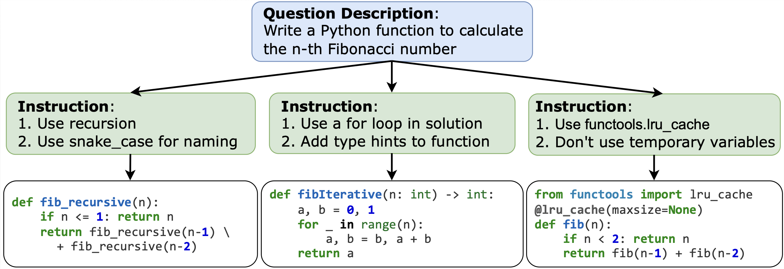
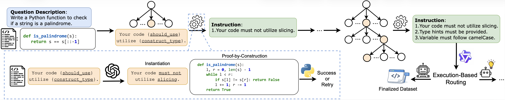
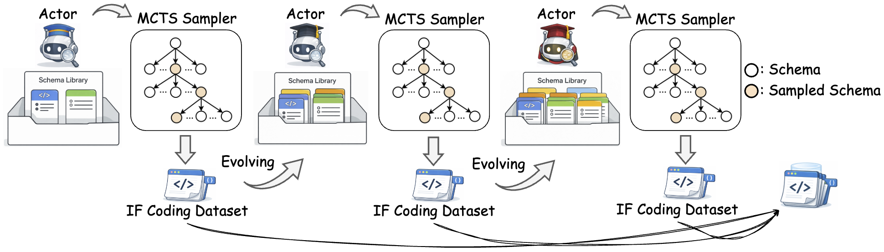
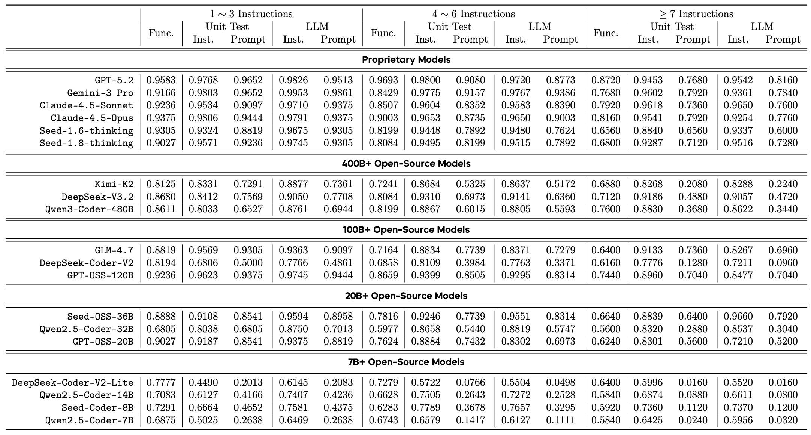

Instruction following (IF) is a critical capability of large language models (LLMs) in automatic programming, which serves as a bridge between human intent expressed in natural language and executable logic (as shown in the figure below). However, synthesizing large-scale instruction-paired coding data depends heavily on manual curation.

We introduce IFCodeEvolve, a scalable instruction following (IF) coding data synthesis framework that leverages actor-parametric schema co-evolution. To ensure a steerable data synthesis, we apply parametric instruction, which represents a vast instruction space within a compact library of schema.
Building upon this, we use two strategies to synthesize high-quality, complex IF coding data: (1) MCTS-Guided Proof-by-Construction: We treat problem generation as a search process, adding constraints one by one from a library and immediately verifying they can be solved through code. (2) Actor-Parametric Schema Co-Evolution: An actor model identifies difficult cases to improve the dataset while simultaneously refining the schema library based on MCTS statistics.
The sythestic data generated by IFCodeEvolve can significantly boosts base model performance with varying parameter sizes (1.3B to 32B). Besides, we curate IFCodeBench, a comprehensive human-verified benchmark equipped with solutions and robust AST-based verification.

Coding instructions require strict logical consistency—conflicting constraints (e.g., naming rules vs. no-variable rules) can make problems unsolvable. To address this, we propose:
(1) Parametric Instruction: We represent diverse coding constraints as modular, programmable templates that include specific logic types and adjustable parameters, such as “The length of variable names {comparison} exceed {length} characters.” Such representation enables LLMs to instantiate the constraint conditioned on the problem context.
(2) Monte Carlo Tree Search-based Sampler: To navigate the vast space of possible instruction combinations, we employ an MCTS-guided search that incrementally adds constraints while verifying their logical compatibility. Each step in the tree represents a "proof-by-construction" process, ensuring that every synthesized problem remains solvable and consistent before more complexity is added.

To overcome the limits of static data generation, we extend our pipeline into a self-evolving framework that iteratively scales both problem difficulty and diversity:
(1) Actor Evolution: The actor model is iteratively fine-tuned on the most challenging instances identified during MCTS sampling. This continuous learning loop progressively boosts the model's performance, enabling it to handle increasingly complex instructions.
(2) Instruction Schema Evolution: The schema library evolves by merging successful primitives and pruning ineffective ones based on sampler statistics. This dynamic expansion allows the framework to discover novel, high-order constraint combinations beyond the initial design.
| Model | IFEvalCode (Inst.) | IFEvalCode (Prompt.) | CodeIF (Inst.) | CodeIF (Prompt.) |
|---|---|---|---|---|
| Qwen2.5-Coder-7B | 68.37% | 28.00% | 59.86% | 7.18% |
| Qwen2.5-Coder-7B + IFCodeEvolve | 87.01% | 61.43% | 84.35% | 30.07% |
| Seed-Coder-8B | 80.51% | 46.67% | 73.37% | 15.23% |
| Seed-Coder-8B + IFCodeEvolve | 85.19% | 60.95% | 85.20% | 33.33% |
| DeekSeek-Coder-1.3B | 64.46% | 23.81% | 57.25% | 8.05% |
| DeekSeek-Coder-1.3B + IFCodeEvolve | 78.22% | 43.33% | 79.85% | 20.11% |
| Qwen2.5-Coder-14B | 75.49% | 41.90% | 75.71% | 13.51% |
| Qwen2.5-Coder-14B + IFCodeEvolve | 87.06% | 65.71% | 87.62% | 35.63% |
| Qwen2.5-Coder-32B | 84.92% | 57.62% | 81.61% | 25.00% |
| Qwen2.5-Coder-32B + IFCodeEvolve | 89.62% | 70.95% | 88.83% | 41.47% |

We curated a high-quality benchmark from our generated data using a strict human-in-the-loop verification process. We designed a rubric consisting of four binary sanity checks and two scalar quality metrics. An initial LLM-based filter first discarded invalid samples and identified high-potential candidates (Value = 3). These candidates then underwent manual review, where human annotators applied the same criteria. Only instances confirmed by humans to possess high value were included in the final test set with 530 problems.